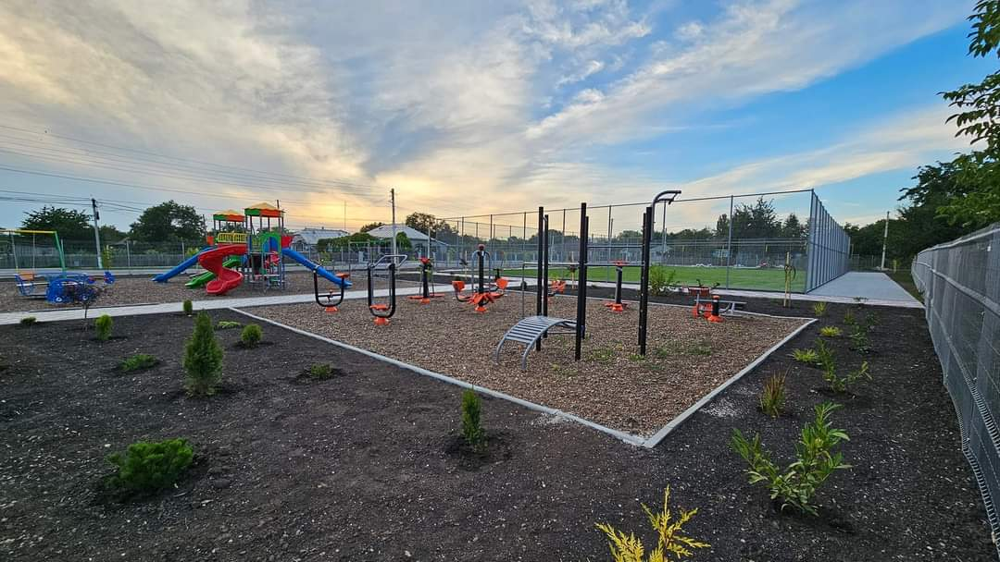

Explorează COLICĂUȚI"
Biserica "Sfântul Ierarh Grigorie Teologul"
Primele datări există de la 1817, unde se vorbește despre un preot Vasile Cernăuțeanu, un dascăl și un clopotar, care activau într-o mică bisericuță din lemn. În 1882 creștinii au început construcția bisericii din piatră cu pereți tencuiți în interior și exterior care a fost finisat în 1885. Biserica a fost ridicată în cinstea Sf.Grigore Teologul, sărbătorit la 7 februarie. În anul 1815, în cadrul bisericii se atestă o Școală Generală de Zemstvă, întreținută de comunitate, la care învățau 60 de băieți. În prezent parohul bisericii din localitate este Turea Victor.
Gimnaziul Colicăuți
Școala din Colicăuți a fost înființată în anul 1904, la început erau doar 20 de elevi. În 1908 s-a dat în exploatare o școală cu o singură sală de clasă, lecțiile se petreceau în 2 schimburi. În 1961 s-au mai adăugat încă câteva săli de clasă. În 1965 școala avea 13 săli de clasă și activau 19 învățători. Până în 2003 a fost școală medie de cultură generală, iar din 2003-2016 a avut statul de Liceu Teoretic. Din 2016 a fost reorganizată în gimnaziu, cu limba de intruire-română.În prezent instituția are un contingent de 134 elevi, repartizaţi în 9 complete de clasă.
Gradinița "Doinița"
Grădiniță de copii din sat și-a început activitatea în anul 1960, neavând clădire proprie. Abia în 1961 a fost dat în exploatare clădirea grădiniței de astazi. La început erau doar 2 grupe și funcționa doar vara. Începând cu anul 1979 grădinița funcționează anul împrejur a câte 12 ore pe zi. Grădinița este conectată la conducta de gaze naturale și apeduct. Director al grădiniței este Bolduma Aliona Mihai.
Moara
În anul 1929 Lupu Nicolae a pus pe roate o moaă pentru făină. Inițial lucrau doar 8 persoane. Pe parcursul anilor moara a sevenit recunoscută nu doar de satele vecine , dar și de toate satele din raion, și asta pentru că făina măcinată aici e cea mai bună de calitate, așa spun gospodinele. Într-o oră la moară se macină 1620 kg de grâu și se capătă 1000 kg de făină și 345 kg de tărâțe. Pentru sat moara este un lucru mare, fiidcă aceasta contribuie la dezvoltarea economică a satului.
Casa de cultură
Casa de Cultură are o clădire spațioasă, luminoasă, bine îngrijită. A fost deschisă în anul 1975. Primul director al Casei de Cultură a fost Gheorghe Rusu, apoi Lupu Ivan, Vengher Zinaida, iar din 1985 în fruntea acestei instituții a fost Victor Hadîrca. Din 2022 director este Serghei Ladaniuc.
Complexul Sportiv
Complexul sportiv din localitate are amenajat un teren minifotbal și spațiu amenajat pentru copiii. Deschiderea acestui complex sportiv a avut loc la 14 iulie 2024.Terenul a fost realizat după toate standartele europene, folosind gazon certificat FIFA și plasă zincată, producție proprie. venimentul a fost moderat de către marele actor Emilian Cretu - Da Sunt Român , care a creat o atmosferă extrordinară și a evidențiat importanța sportului în țara noastră. Invitații speciali, doamna Efimia Bandalac, deputat în Parlamentul Republicii Moldova, domnul Dorin Pavaloi, președintele raionului Briceni, Parohul Bisericii- domnul Victor Turea, au reiterat necesitatea spațiilor sigure pentru joacă și dezvoltare.
Școala de Arte

Școala de Arte a fost înființată în anul 1991, pe parcursul a 20 de ani, această instituție a demonstrat că sunt și la Colicăuți oameni talentați. Aici elevii studiază arta culorilor și a formelor în cadrul Clasei de pictură; citesc note de pe portativ în Clasa de muzică :vioară, pian, acordeon, instrumente aerofone. Elevii care studiază aici pa absolvire primesc și un certificat care le permite să continue calea muzicii la Colegiul de Muzică, Stefan Neaga din Chișinău, la Academia de Muzică, Teatrul de Arte Plastice. Absolvenții Școlii de Arte din Colicăuți sunt apreciați în lumea muzicală, de exemplu: Budanov Ana, Costaș Irina, iar Topor Mariana este artistă în Ansamblul Joc. În fruntea Școlii de Arte din Colicăuți se află Dumitru Lisii. Printre discipolii săi se numără: Tiron Sergiu- solist la trompetă în Orchestra Fluieraș, Petru Zapalschi, Alexei Șahrai, Victor și Marin Mardari.